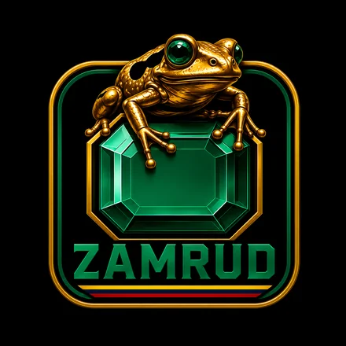
ZAMRUD · BOGOTHAMQueremos que seas Andes, la Organizadora: la voz que arma el equipo y sale a buscar las esmeraldas de Bogotá.
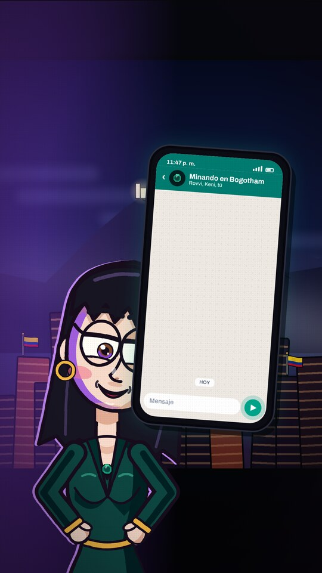
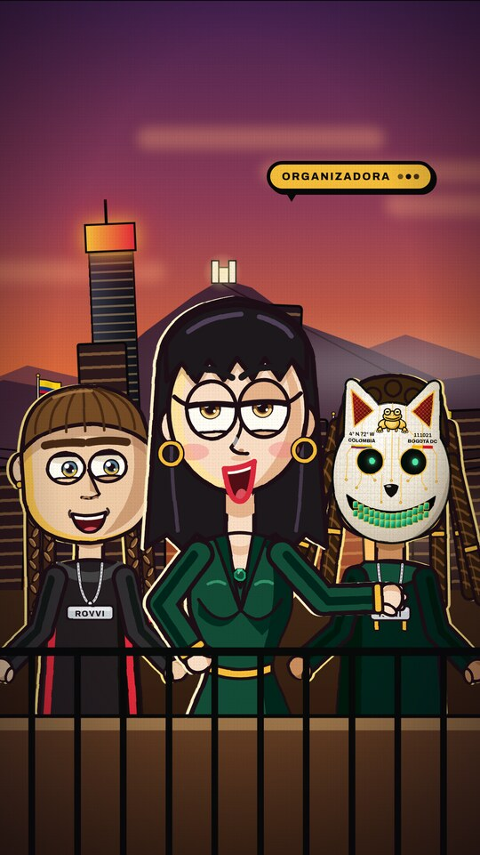
En Bogotá hay esmeraldas por minar, y esas esmeraldas son los artistas. La Organizadora arma un equipo con Rovvi y Keni, les da una misión y sale a buscarlas. El corto termina invitando a los artistas a dejar su información.
Sí, tú serás la Organizadora, que se llamará Andes, como los Andes, la cordillera que acompaña a Bogotá. Lidera, decide y convence. Habla con seguridad y un toque de misterio. Está en casi todas las escenas y tiene los diálogos principales.
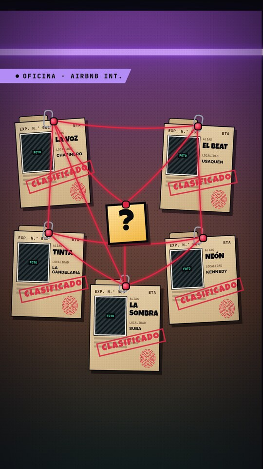
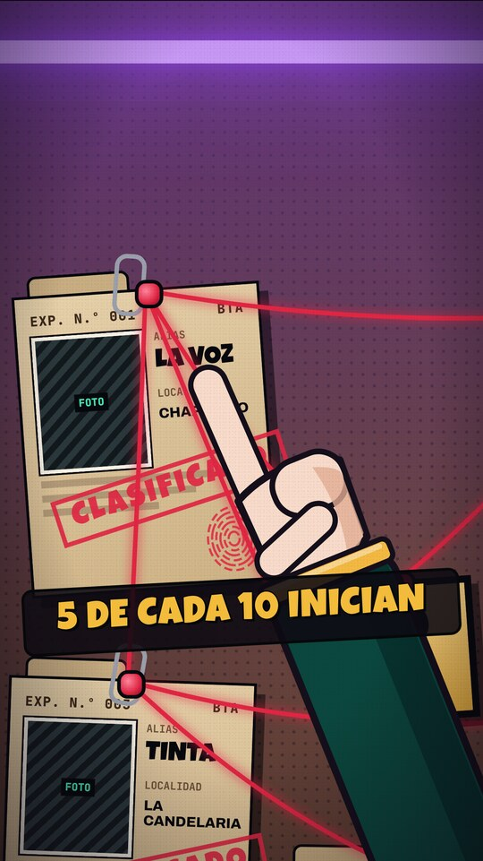
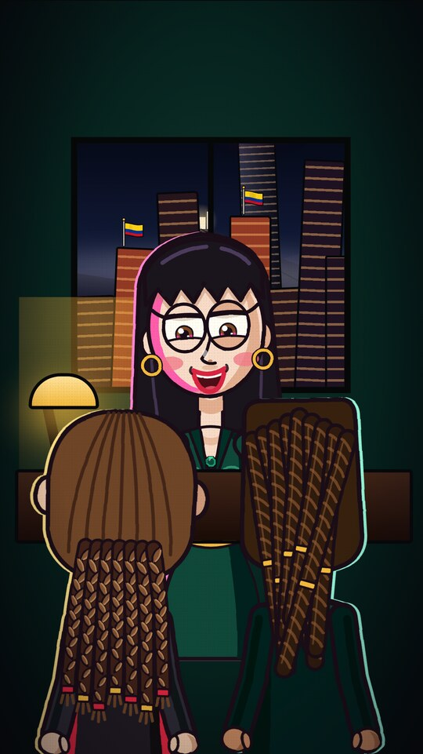
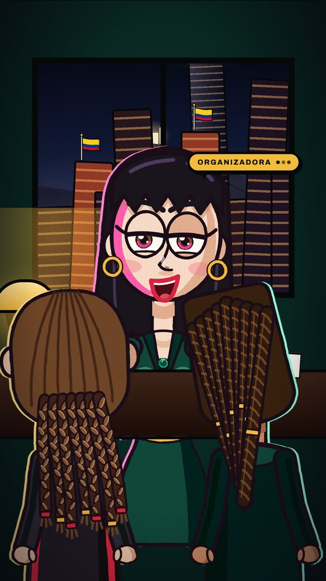
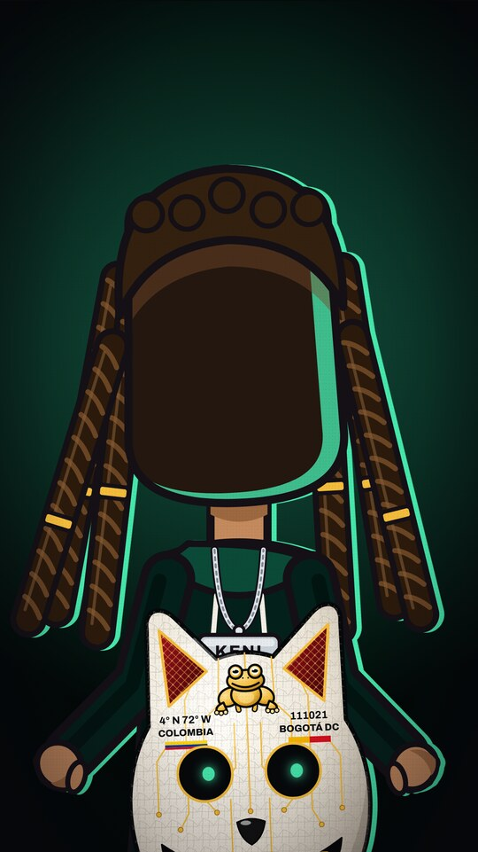
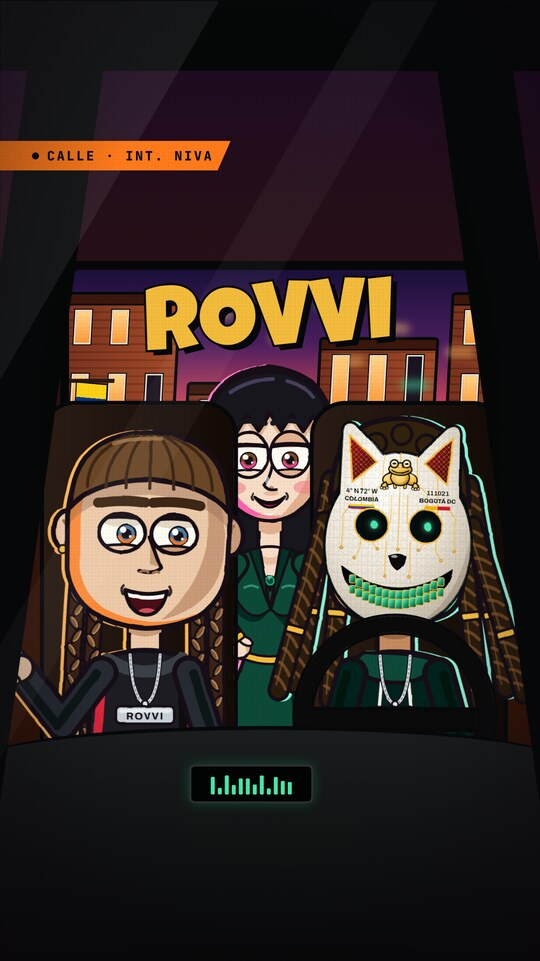
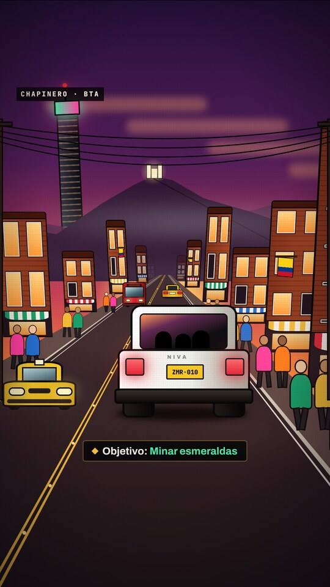
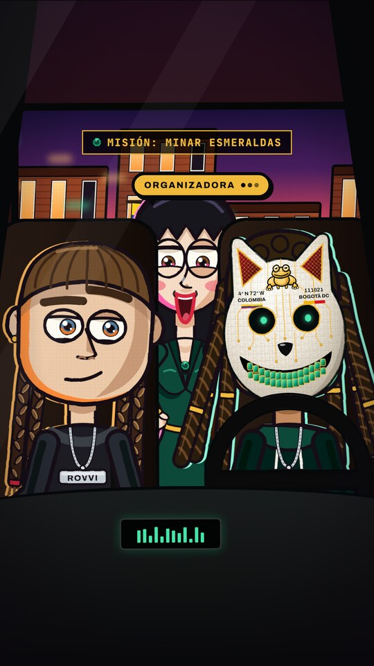
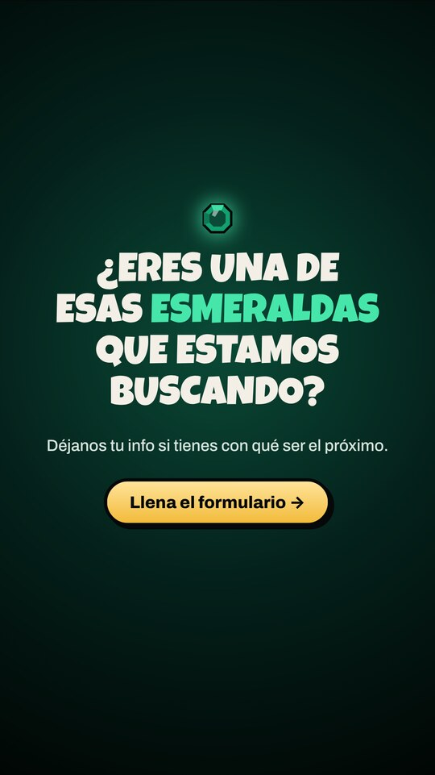
Es una animación de referencia. El look final lo define la dirección audiovisual.
Zamrud · Bogotham
[correo] · [WhatsApp]
Gracias por tu tiempo. Nos encantaría construir esto contigo.
Equipo Zamrud